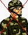

HOW TO USE THE
APPLET
Home Page
The applet is loaded with the Home Page. The Home Page describes
the problem and the solutions that have been implemented.
Example with 4 generals & 1 traitor
The example consists of 2 cases:
Case (i) : The commander is loyal and one of the 3 generals is a
traitor.
Case (ii) : The commander is a traitor and the 3 generals are loyal.
The output is displayed both graphically as well as in the output
text area.
1. Press the Start button
to start the example. The commander and the generals are displayed along
with the traitor.
2. Press Next
to go through successive steps of the example. At each step, you will see
the messages exchanged and the final decision taken by each of the loyal
generals.
Oral Messages Algorithm
The applet consists of 3 panels: input panel, display panel and
the output panel. The input panel takes the input from the user. The display
panel displays the input and output graphically. The output panel displays
the input and output in text form.
The algorithm can be executed as follows:
1. Enter the number of Generals. No of Generals must be greater
than 3 or less than 21. Press OK.
2. Enter the number of Traitors. Press OK.
3. Click on the picture of a general to identify him as a traitor/loyal
general. When all the traitors have been identified, press OK.
4. Click on the picture of a commander to identify him as a commander.
Press OK.
5. Select the command issued as "Retreat" or "Attack". Press
OK.
6. Press Execute to execute the algorithm.
The decision taken by each loyal general is shown.
7. To see the details of the messages exchanged, press the Show
Details button.
8. At any time, the demo can be reset by pressing the Reset
button.
The pictures represent the following:

Loyal General
Traitor General
Loyal Commander
Traitor Commander
Details of Messages :
Due to the large number of messages exchanged, it is not possible
to show them graphically. So the Show Details
button when pressed will show the messages exchanged in text format. The
number of messages received by each general is also displayed. The message
format is as follows:
A->0->1 :
This means an Attack message originated from General 0 was sent to General
1.
A->0->1->2 :
This mean an Attack message originated from General 0 was sent to General
1 who sent it to General 2.
If a general is traitorous he may change the
command he sends to the other generals.
Signed Messages Algorithm
The applet consists of 3 panels: input panel, display panel and
the output panel. The input panel takes the input from the user. The display
panel displays the input and output graphically. The output panel displays
the input and output in text form.
The algorithm can be executed as follows:
1. Enter the number of Generals. Press OK.
2. Enter the number of Traitors. Press OK.
3. Click on the picture of a general to identify him as a traitor/loyal
general. When all the traitors have been identified, press OK.
4. Click on the picture of a commander to identify him as a commander.
Press OK.
5. Select the command issued as "Retreat" or "Attack". Press
OK.
6. Press Execute to execute the algorithm.
The decision taken by each loyal general is shown.
7. To see the details of the messages exchanged, press the Show
Details button.
8. At any time, the demo can be reset by pressing the Reset
button.
Details of Messages :
Due to the large number of messages exchanged, it is not possible
to show them graphically. So the Show Details
button when pressed will show the messages exchanged in text format. The
number of messages received by each general is also displayed. The message
format is as follows:
A->0->1 :
This means an Attack message originated from General 0 was sent to General
1.
A->0->1->2 :
This mean an Attack message originated from General 0 was sent to General
1 who sent it to General 2.
In this case since messages cannot be forged,
a traitor general cannot change the command he receives and sends to the
other generals.
Note: The algorithm works for greater than 20 generals but here
has been restriced to 20 to provide user friendly display.